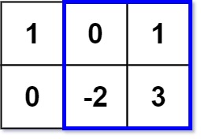

363. 矩形区域不超过 K 的最大数值和
枚举上下两行把中间行压成一条 colSum，问题退化为「不超过 k 的最大子数组和」：前缀和进有序集合，查 ≥ pre−k 的最小前缀。
思路
- 双重循环枚举上边界
top、下边界bottom，行间数值累加进colSum—— 每一对 (top,bottom) 只花 O(n) 更新。 - 一维问题「子数组和 ≤ k 的最大值」：子段和 =
pre[r] − pre[l]，要它 ≤ k 且最大 →pre[l] ≥ pre[r] − k中最小的那个。 TreeSet.ceiling(pre − k)一步查到ge；pre − ge即候选答案，前缀0别忘先放进集合。- 若行数远多于列数，先转置矩阵再套同一套流程，复杂度按小边平方走。
图解
最优解
1import java.util.*;2 3class Solution {4 public int maxSumSubmatrix(int[][] matrix, int k) {5 int m = matrix.length, n = matrix[0].length;6 int ans = Integer.MIN_VALUE;7 // 枚举上边界 top、下边界 bottom，两行之间压成一条 colSum，矩形问题变成一维问题8 for (int top = 0; top < m; top++) {9 int[] colSum = new int[n];10 for (int bottom = top; bottom < m; bottom++) {11 for (int j = 0; j < n; j++) colSum[j] += matrix[bottom][j];12 ans = Math.max(ans, maxSubarrayNoMore(colSum, k));13 }14 }15 return ans;16 }17 18 // 一维版：不超过 k 的最大子数组和。前缀和 pre，答案 = pre − ge，ge 是 ≥ pre−k 的最小前缀19 private int maxSubarrayNoMore(int[] a, int k) {20 TreeSet<Integer> set = new TreeSet<>();21 set.add(0);22 int pre = 0, best = Integer.MIN_VALUE;23 for (int v : a) {24 pre += v;25 Integer ge = set.ceiling(pre - k); // 这样子段和 pre − ge ≤ k；ge 越小则子段和越大26 if (ge != null) best = Math.max(best, pre - ge);27 set.add(pre);28 }29 return best;30 }31}题目
给你一个 m x n 的矩阵 matrix 和一个整数 k ，找出并返回矩阵内部矩形区域的不超过 k 的最大数值和。
题目数据保证总会存在一个数值和不超过 k 的矩形区域。
示例 1：

输入：matrix = [[1,0,1],[0,-2,3]], k = 2
输出：2
解释：蓝色边框圈出来的矩形区域 [[0, 1], [-2, 3]] 的数值和是 2，且 2 是不超过 k 的最大数字（k = 2）。
示例 2：
输入：matrix = [[2,2,-1]], k = 3 输出：3
提示：
m == matrix.lengthn == matrix[i].length1 <= m, n <= 100-100 <= matrix[i][j] <= 100-105 <= k <= 105
进阶：如果行数远大于列数，该如何设计解决方案？
题面取自力扣当前版本。
数据快照 2026-11-04。题面版权归力扣所有，本站点仅供本人学习使用，请勿对外发布。